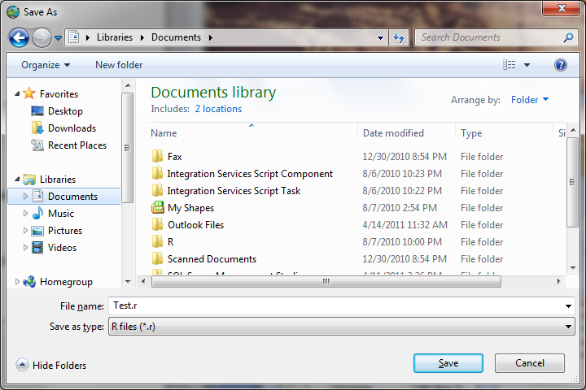
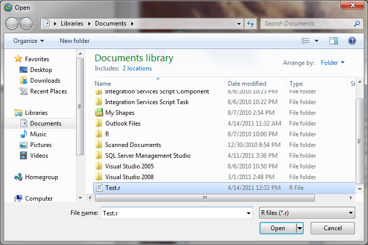

Saving R Scripts and Opening Them Later
Follow the steps below to save a script that you have written in the HydroR script editor to your hard disk for later use:
- Click on the “Save Script” button on the HydroR ribbon. A file dialog window will open asking you where you want to save your script.

- Select a location on disk to save your file and then provide a file name. The file will be stored as a text file with a ”.r” extension. Click the “Save” button.
- To open a script that you have saved to your hard disk, click the “Open Script” button on the HydroR ribbon. The file dialog window will open asking you where your R script is located on your hard disk.

- Navigate to your R script that you have saved and select it in the file dialog box. Then click the “Open” button. Your saved script will be loaded into the HydroR script editor.